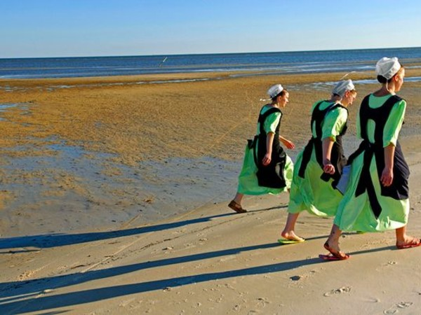
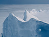
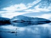
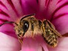

Mujeres Asmish en la playaEn lugar de dejar un espacio alrededor del sujeto, trata de hacer lo contrario. Fotografia a sujetos en movimiento, en lugar de un marco crea una sensacion de movimiento y se crea interes de lo que han dejado atras
|
Galeria
 Consejos para tomar fotos de aventuraLuz de tarde tibia y un angulo de la foto extrema agregar drama de una foto de un skater a punto de caer en una pista de patinaje |
Dominacion de coloresUn teleobjetivo comprime todo en una escena, incluyendo elementos tan pequeños como los copos de nieve |
Como hacer fotos MacroEl enfoque automatico no siempre funciona bien cuando se dispara un primerisimo plano de la fotografia. Cambiar un enfoque manual y obtendras imagenes macro mas nitidas |
|